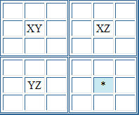
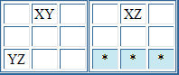
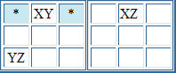
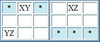

Sudoku Solving Techniques - XY-WingThis is similar to a short forcing chain consisting of two links for each candidate, but instead of placing a number, it allows for candidate elimination. The name is derived partly from the usual explanation, and partly because it requires a cell fewer than X-wing, and so could be a Y-wing. In the partial puzzle below, consider the cells that have only the candidates shown:  It can be easily seen that whichever value is in XY, the cell marked with the asterisk cannot be Z. if XY = X, then XZ = Z, so * cannot be Z The cells don't need to form a perfect rectangle, but XY and XZ, and XY and YZ need to be linked by being in the same unit (that is the same column, row or block.) Once you've got this arrangement, you can eliminate Z from the candidates of all cells that occupy the intersection of the units containing XZ and YZ. Other possible combinations:   The astute among you will notice both the above examples have XY, XZ and YZ in the same relative locations, and so can be combined to give:  All the cells marked with an asterisk can have Z removed from their candidates. Back to Sudoku Solving Techniques
|